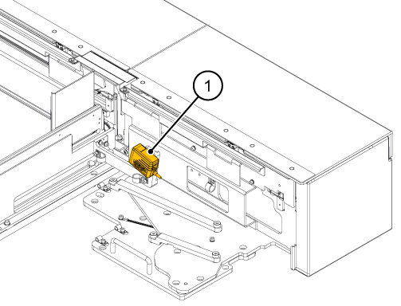
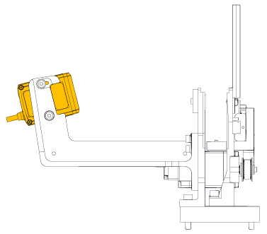

Sample Presentation Unit (SPU) Camera Operations

| 1 | Camera |

- Read sample rack barcodes
- Read sample container barcodes
- Identify sample container types
- Detect the presence or absence of sample container caps
Sample container type detection
| Rack Type | Specifications |
|---|---|
| Common tube rack | Supports any tube 12-16 mm in diameter and 65-100 mm in height |
| Common cup rack |
support the following cups:
|
Because lab users may insert any supported tubes and cups into the racks, the system will identify sample container types to determine compatibility. The system will also measure sample levels in the containers and detect the presence or absence of sample container caps (to prevent the aliquot and precision pipettors from attempting to aspirate through the caps).
SPU Camera Operations
The SPU camera will read sample rack, sample container, and calibration barcodes, identify sample container types, and detect the presence or absence of sample container caps.
Bar Code Validation
The SPU camera will validate barcodes against user input. If the camera determines a barcode is invalid, the SPU will move the rack to the offload lane and alert the user.
| SPU Motion | Camera Function |
|---|---|
| Rack enters presentation lane, goes to Image Position 1, and stops. | Read sample rack and sample container barcodes and store the rack ID and container ID for rack locations 1 and/or 2. If a barcode does not match user input, flag the rack location. |
| Move rack to offload lane and alert user. | Read invalid barcode |
Container Identification and Cap Detection
In the presentation lane, and before the system moves a sample rack to the aliquot sample pipettor, the SPU camera will read sample rack, sample container, and calibration barcodes, and if the barcodes do not match user input, the system fill flag the rack location. The SPU camera will also identify sample container types, and if a container type is not supported, the system will flag the rack location. The SPU camera will also detect the presence or absence of sample container caps, and if a container is capped, the system will flag the rack location.
| SPU Motion | Camera Function |
|---|---|
| Rack enters presentation lane, goes to Image Position 1, and stops. | Read sample rack and sample container barcodes and store the rack ID and container ID for rack locations 1 and/or 2. If a barcode does not match user input, flag the rack location. |
| Rack remains at locations 1 and/or 2 |
Read barcode Read calibration barcode |
| Rack remains at locations 1 and/or 2 |
Identify the sample container type, detect the presence or absence of a sample container cap, and store rack data and container feature data If the container is capped, not supported, or in an incorrect position, flag the rack location |
| Rack goes toward image position 2 and stops |
Read barcode and store container ID at rack location(s) 3 and/or 4 If the barcode does not match user input, flag the rack location |
| Rack goes toward image position 3 and stops |
Read barcode and store container ID at rack location(s) 5 and/or 6 and/or 7 If the barcode does not match user input, flag the rack location |
| Rack remains at position 5 and/or 6 and/or 7 |
Identify the sample container type, detect the presence or absence of a sample container cap, and store rack data and container feature data for rack locations 5 and/or 6 and/or 7 If the container is capped, not supported, or in an incorrect position, flag the rack location |
| True Move rack to aliquot pipettor. After sample processing is complete, move rack to offload lane and alert user.
False Move rack to offload lane and alert user. |
Status: at least one container flag |
Cup or Tube Detection
Before the system moves a sample rack to the aliquot sample pipettor for processing, the SPU camera will read the rack ID and detect the presence or absence of sample containers and calibration barcodes.
| SPU Motion | Camera Function |
|---|---|
| Rack loads | Read rack ID |
| Rack at camera position |
Detect cup or tube Detect calibration barcode |
| Move to aliquot pipettor for processing | No calibration barcode |
| Rack remains on position | Calibration barcode present |
| Move to aliquot pipettor for processing | Check for correct position |